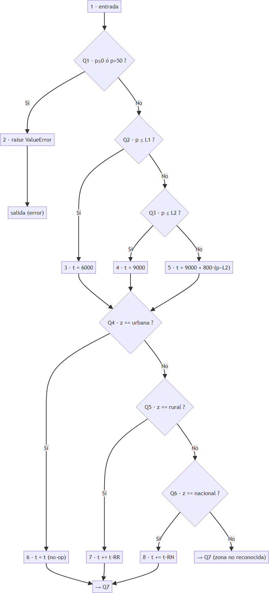
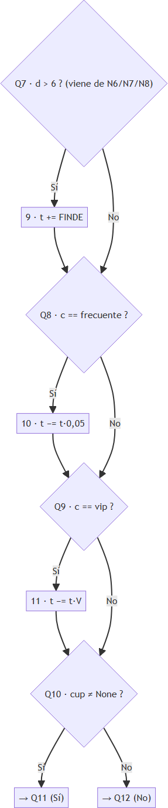
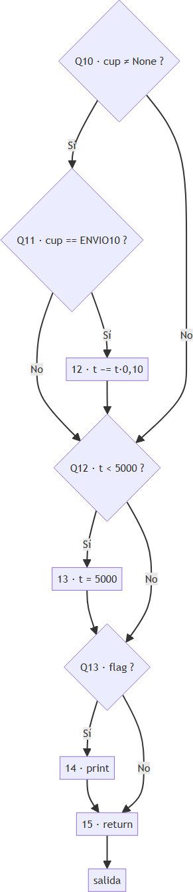
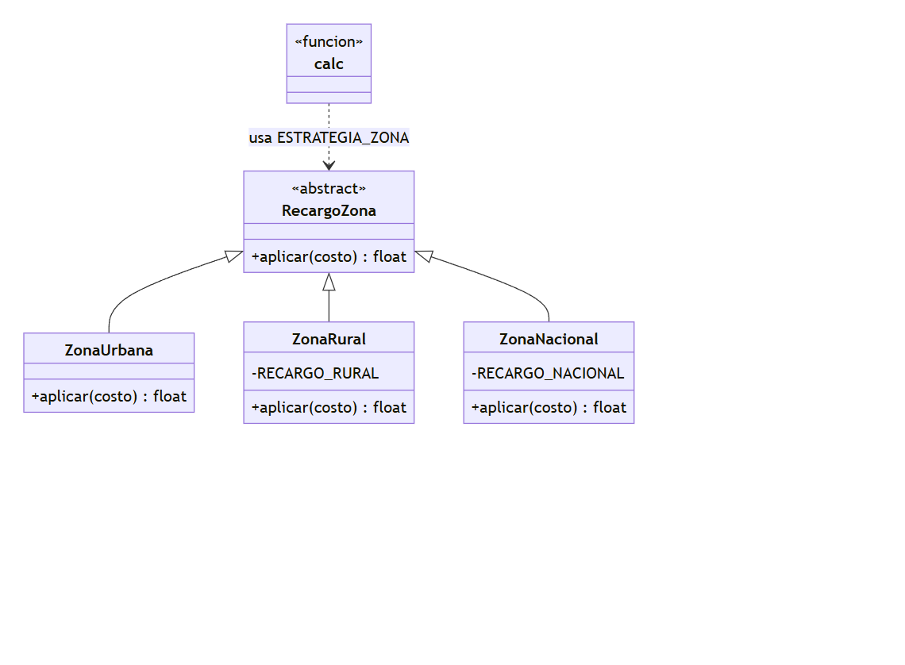

Estudiante: Yoider Brito Código estudiantil: 0182320076 Grupo B1 · VI semestre · 2026-2 · Tercer corte
Últimos 6 dígitos: 3 2 0 0 7 6 → A=3, B=2, C=0, D=0, E=7, F=6
| A | B | C | D | E | F | PMAX | L1 | L2 | RR | RN | V | S | CAMBIO |
|---|---|---|---|---|---|---|---|---|---|---|---|---|---|
| 3 | 2 | 0 | 0 | 7 | 6 | 45 kg | 4 kg | 10 kg | 25 % | 40 % | 10 % | $2.000 | 0 |
Reglas personalizadas:
- D = 0 (par) → Tramo 1 incluye el límite: peso ≤ 4
- E = 7 (impar) → Recargo de fin de semana después de los descuentos
- B = 2 (par) → Solo se aplica el mayor descuento
- F = 6 (par) → Cupón inexistente se ignora
- CAMBIO = 0 → Parte 8: Nueva zona insular (San Andrés), +70 %, sin cupón
HU1 · Costo por peso del paquete (cubre R1, R3, R8) Como cliente de EnvíaYa, quiero que el costo de mi envío dependa del peso del paquete en tramos, para pagar exactamente lo que corresponde a su tamaño.
Criterios de aceptación: - Dado un peso de 4 kg (igual a mi L1), cuando calculo el costo con zona urbana y cliente normal, entonces se cobra el tramo 1: $6.000 (mi regla D, par, incluye el límite: peso ≤ 4). - Dado un peso de 4,1 kg, cuando calculo el costo, entonces se cobra el tramo 2: $9.000 (ya superó L1 = 4). - Dado un peso de 15 kg, cuando calculo el costo, entonces se cobra $9.000 + $800 × (15 − 10) = $13.000 (proporcional sobre L2 = 10). - Dado un peso de 45,5 kg (mayor que mi PMAX = 45), cuando calculo el costo, entonces se lanza el error “peso inválido”. - Dado un peso de 0 kg o negativo, cuando calculo el costo, entonces se lanza el error “peso inválido”.
HU2 · Recargo por zona de destino (cubre R2, R4, R8) Como cliente de EnvíaYa, quiero que el costo incluya el recargo según la zona de destino, para que el precio refleje el costo real de llevar el paquete allí.
Criterios de aceptación: - Dado un envío a zona rural (mi RR = 25 %), cuando calculo el costo de un paquete de 10 kg, entonces el costo es 9.000 × 1,25 = $11.250, que redondeado al múltiplo de $100 más cercano (50 hacia arriba, R8) es $11.300. - Dado un envío a zona nacional (mi RN = 40 %), cuando calculo el costo de un paquete de 10 kg, entonces el costo es 9.000 × 1,40 = $12.600. - Dado un envío a zona urbana, cuando calculo el costo, entonces no se aplica ningún recargo por zona. - Dado una zona que no es urbana, rural ni nacional, cuando calculo el costo, entonces se lanza un error (R2). - Dado un día fuera del rango 1 a 7, cuando calculo el costo, entonces se lanza un error (R2).
HU3 · Cliente, cupón y fin de semana (cubre R5, R6, R7, R8) Como cliente de EnvíaYa, quiero que se apliquen correctamente mi descuento de cliente, mi cupón y el recargo de fin de semana, para pagar lo justo en cada promoción.
Criterios de aceptación (reglas B, E y F mías): - Dado un cliente vip (V = 10 %) con cupón ENVIO10 (10 %), cuando calculo el costo de un paquete de 4 kg en zona urbana un miércoles, entonces solo se aplica el mayor descuento (mi regla B, par) → 6.000 × 0,90 = $5.400. - Dado un envío el sábado (día 6) con cliente vip, cuando calculo el costo, entonces el recargo de fin de semana (+$2.000, R5) se suma después de los descuentos (mi regla E, impar) → 6.000 × 0,90 + 2.000 = $7.400. - Dado un cupón que no existe (por ejemplo “BIENVENIDA”), cuando calculo el costo, entonces el cupón se ignora y el costo no cambia (mi regla F, par, R7). - Dado un cálculo cuyo valor antes del redondeo fuera menor a $5.000, cuando obtengo el resultado, entonces el costo final nunca es menor que $5.000 y se entrega redondeado al múltiplo de $100 (R8).
| Requisito | Historia | Casos de prueba (se completan en la Parte 3) |
|---|---|---|
| R1 (peso válido, PMAX=45) | HU1 | CN-… |
| R2 (zona y día válidos) | HU2 | CN-… |
| R3 (tarifa base, L1=4, L2=10) | HU1 | CN-… |
| R4 (recargo zona RR=25 %, RN=40 %) | HU2 | CN-… |
| R5 (finde +$2.000 después de descuentos) | HU3 | CN-… |
| R6 (descuentos, solo el mayor) | HU3 | CN-… |
| R7 (cupón inexistente se ignora) | HU3 | CN-… |
| R8 (mínimo $5.000 y redondeo a $100) | HU1, HU2, HU3 | CN-… |
Cada requisito está cubierto por al menos una historia, y cada historia se verificará con casos de prueba de la matriz de la Parte 3.
Producto: función calc(p, z, c, d, cup, flag) del sistema de costos de EnvíaYa (Riohacha).
Especificación de referencia: R1–R8 con mis parámetros (PMAX=45, L1=4, L2=10, RR=25 %, RN=40 %, V=10 %, S=$2.000; reglas D/E/B/F según mis dígitos).
Objetivo: verificar que el código heredado v1.0.0 cumple la especificación, registrar los defectos, y validar el código corregido y refactorizado mediante regresión.
| Nivel | ¿Cómo se aplica a EnvíaYa? | Evidencia |
|---|---|---|
| Unidad | Probar calc función por función: cada regla R1–R8 con sus particiones, límites (0, 4, 10, 45) y tabla de decisión cliente×cupón×finde. Es el nivel central de este parcial. |
Suite pytest tests/test_envios.py |
| Integración | Verificar la composición correcta de las reglas en un mismo cálculo: tramo → recargo de zona → descuentos → finde → mínimo → redondeo, en el orden que exige la especificación (es donde el heredado falla: orden de finde y descuentos). | Casos combinados de la matriz (p. ej. rural+vip+sábado+cupón) |
| Sistema | Ejecutar el flujo completo como lo usaría el sistema de EnvíaYa: lote de envíos representativos de una jornada (todos los tramos, zonas, clientes y días 1–7) por la API pública de envios.py. |
Matriz de ≥20 casos ejecutada contra el módulo completo |
| Aceptación | Validar contra los criterios Dado/Cuando/Entonces de HU1–HU3 (Parte 1), simulando la aprobación del dueño del negocio. Los resultados esperados se calcularon a mano. | Mapeo HU ↔ casos en la matriz de trazabilidad |
python -m pytest tests/ -v y cobertura con --cov=envios --cov-branch.| Riesgo | Prob. | Impacto | Mitigación |
|---|---|---|---|
| Resultados esperados mal calculados a mano (descuentos encadenados, orden del finde) | Alta | Alto | Calcular cada caso paso a paso y revisar contra el ejemplo de referencia del documento; los casos dudosos se marcan y re-verifican |
| Confusión entre la especificación propia y el comportamiento del heredado (asumir que el código es la verdad) | Alta | Alto | La especificación R1–R8 es la única fuente de verdad; toda diferencia se registra como defecto, no como “comportamiento normal” |
| Errores de paridad en mis reglas D/E/B/F al diseñar casos | Media | Alto | Tabla “Mis parámetros” fijada al inicio del informe y en CONFIG; cada caso cita la regla que usa |
| Cobertura insuficiente con pocas pruebas | Media | Medio | Mínimo 20 casos + caminos independientes de la caja blanca; medir cobertura de sentencias y ramas |
| Redondeo ($50 arriba) y mínimo $5.000 pasados por alto | Media | Medio | Casos dedicados de R8 en valores que terminan exactamente en $x50 |
Entrada (para iniciar las pruebas): 1. Especificación R1–R8 completa y congelada con mis parámetros. 2. Código heredado v1.0.0 etiquetado y CONFIG lleno. 3. Matriz de casos diseñada con resultados esperados calculados a mano. 4. Ambiente de pruebas operativo (pytest y pytest-cov instalados).
Salida (para dar por terminadas las pruebas): 1. 100 % de los casos de la matriz ejecutados, con resultado PASSED/FAILED registrado. 2. Todos los defectos reportados con ID, severidad y prioridad. 3. Cobertura de sentencias y de ramas medida y documentada. 4. Tras la corrección (Parte 6): regresión completa en verde y cobertura ≥ antes de la corrección.
Entrada: peso (kg, admite decimales)
| # | Partición | Rango | Válida | Resultado esperado |
|---|---|---|---|---|
| P1 | Peso no válido | p ≤ 0 | No | Error “peso inválido” (R1) |
| P2 | Tramo 1 | 0 < p ≤ 4 | Sí | $6.000 (R3, L1 incluido) |
| P3 | Tramo 2 | 4 < p ≤ 10 | Sí | $9.000 (R3) |
| P4 | Tramo proporcional | 10 < p ≤ 45 | Sí | 9.000 + 800×(p−10) (R3) |
| P5 | Peso no válido (alto) | p > 45 | No | Error “peso inválido” (R1) |
Entrada: zona
| # | Partición | Valores | Válida |
|---|---|---|---|
| P6 | Urbana | “urbana” | Sí — sin recargo (R4) |
| P7 | Rural | “rural” | Sí — +25 % (R4) |
| P8 | Nacional | “nacional” | Sí — +40 % (R4) |
| P9 | Cualquier otra | “lunar”, “”, etc. | No — error (R2) |
Entrada: día
| # | Partición | Valores | Válida |
|---|---|---|---|
| P10 | Entre semana | 1–5 | Sí — sin recargo de finde |
| P11 | Sábado | 6 | Sí — +$2.000 después de descuentos (R5, E impar) |
| P12 | Domingo | 7 | Sí — +$2.000 después de descuentos (R5) |
| P13 | Fuera de rango | 0, 8, negativos | No — error (R2) |
Entrada: cliente
| # | Partición | Valores | Válida |
|---|---|---|---|
| P14 | Normal | “normal” | Sí — sin descuento |
| P15 | Frecuente | “frecuente” | Sí — 5 % (R6) |
| P16 | VIP | “vip” | Sí — 10 % (R6) |
Entrada: cupón
| # | Partición | Valores | Válida |
|---|---|---|---|
| P17 | Sin cupón | None | Sí |
| P18 | ENVIO10 | “ENVIO10” | Sí — 10 % (R6) |
| P19 | Cupón inexistente | “BIENVENIDA”, etc. | Sí (input aceptado) — se ignora (R7, F par) |
Nota de análisis: la especificación (R2) solo exige error para zona y día inválidos; no define el comportamiento con un cliente no reconocido. Se documenta esta omisión: con cliente desconocido el sistema no aplica descuento (se asiste como “normal”), y se deja registrado como posible mejora (solicitud de cambio futura).
Mi L1 = 4 con regla D par → límite INCLUIDO (peso ≤ 4 va al tramo 1):
| Borde | Valor límite | Justo dentro | Justo fuera | R3 |
|---|---|---|---|---|
| Inferior | 0 | 0,1 → $6.000 | 0 → error | R1 |
| L1 | 4 (incluido) | 4 → $6.000 | 4,01 → $9.000 | R3 |
| L2 | 10 (incluido) | 10 → $9.000 | 10,01 → 9.000+800×0,01=$9.008→$9.000 (R8) | R3 |
| PMAX | 45 (incluido) | 45 → 9.000+800×35=$37.000 | 45,01 → error | R1, R3 |
Reglas mías: B par → solo el mayor descuento; E impar → finde se suma DESPUÉS de descuentos; F par → cupón inexistente se ignora.
Por F par, “cupón inexistente” es equivalente a “sin cupón” (misma acción), lo que reduce la tabla a 12 reglas:
| # | Cliente | Cupón | Finde | Descuento aplicado | Recargo finde | Acción |
|---|---|---|---|---|---|---|
| D1 | normal | ninguno | no | — | — | base |
| D2 | normal | ninguno | sí | — | +$2.000 al final | base + finde |
| D3 | normal | ENVIO10 | no | 10 % | — | base × 0,90 |
| D4 | normal | ENVIO10 | sí | 10 % | +$2.000 al final | (base × 0,90) + 2.000 |
| D5 | frecuente | ninguno | no | 5 % | — | base × 0,95 |
| D6 | frecuente | ninguno | sí | 5 % | +$2.000 al final | (base × 0,95) + 2.000 |
| D7 | frecuente | ENVIO10 | no | 10 % (el mayor de 5 %/10 %) | — | base × 0,90 |
| D8 | frecuente | ENVIO10 | sí | 10 % | +$2.000 al final | (base × 0,90) + 2.000 |
| D9 | vip | ninguno | no | 10 % | — | base × 0,90 |
| D10 | vip | ninguno | sí | 10 % | +$2.000 al final | (base × 0,90) + 2.000 |
| D11 | vip | ENVIO10 | no | 10 % (empate: mayor) | — | base × 0,90 |
| D12 | vip | ENVIO10 | sí | 10 % | +$2.000 al final | (base × 0,90) + 2.000 |
En todas las reglas: el recargo de finde se aplica después del descuento (E impar) y antes del mínimo/redondeo (R8).
| ID | Requisito | Peso | Zona | Cliente | Día | Cupón | Esperado | Técnica |
|---|---|---|---|---|---|---|---|---|
| CN-01 | R3 | 2 | urbana | normal | 3 | — | $6.000 | Partición P2 (interior) |
| CN-02 | R3 | 4 | urbana | normal | 3 | — | $6.000 | Valor límite L1 (incluido, D par) |
| CN-03 | R3 | 4,01 | urbana | normal | 3 | — | $9.000 | Valor límite L1+ε |
| CN-04 | R3 | 10 | urbana | normal | 3 | — | $9.000 | Valor límite L2 (incluido) |
| CN-05 | R3, R8 | 10,5 | urbana | normal | 3 | — | $9.400 | Partición P4 (interior, proporcional) |
| CN-06 | R1, R3 | 45 | urbana | normal | 3 | — | $37.000 | Valor límite PMAX (incluido) |
| CN-07 | R1 | 45,01 | urbana | normal | 3 | — | Error | Valor límite PMAX+ε |
| CN-08 | R1 | 0 | urbana | normal | 3 | — | Error | Valor límite inferior |
| CN-09 | R1 | 0,1 | urbana | normal | 3 | — | $6.000 | Valor límite 0+ε |
| CN-10 | R4 | 2 | rural | normal | 3 | — | $7.500 | Partición P7 (rural +25 %) |
| CN-11 | R4 | 2 | nacional | normal | 3 | — | $8.400 | Partición P8 (nacional +40 %) |
| CN-12 | R2 | 2 | lunar | normal | 3 | — | Error | Partición P9 (zona inválida) |
| CN-13 | R2 | 2 | urbana | normal | 0 | — | Error | Partición P13 (día inválido) |
| CN-14 | R2 | 2 | urbana | normal | 8 | — | Error | Partición P13 (día inválido) |
| CN-15 | R5 | 2 | urbana | normal | 6 | — | $8.000 | Partición P11 (sábado) |
| CN-16 | R5 | 2 | urbana | normal | 7 | — | $8.000 | Partición P12 (domingo) |
| CN-26 | R5, R6 | 2 | urbana | vip | 7 | — | $7.400 | Tabla decisión D10 (finde después de descuento, E impar) |
| CN-17 | R6 | 2 | urbana | frecuente | 3 | — | $5.700 | Partición P15 (5 %) |
| CN-18 | R6 | 2 | urbana | vip | 3 | — | $5.400 | Partición P16 (10 %) |
| CN-19 | R6 | 2 | urbana | normal | 3 | ENVIO10 | $5.400 | Partición P18 (cupón 10 %) |
| CN-20 | R6 | 2 | urbana | vip | 3 | ENVIO10 | $5.400 | Tabla decisión D11 (solo el mayor, B par) |
| CN-21 | R6 | 2 | urbana | frecuente | 3 | ENVIO10 | $5.400 | Tabla decisión D7 (mayor de 5 %/10 %) |
| CN-22 | R5, R6 | 2 | urbana | vip | 6 | ENVIO10 | $7.400 | Tabla decisión D12 (finde después, E impar) |
| CN-23 | R7 | 2 | urbana | normal | 3 | BIENVENIDA | $6.000 | Partición P19 (cupón ignorado, F par) |
| CN-24 | R3,R4,R5,R6,R8 | 4 | rural | vip | 6 | ENVIO10 | $8.800 | Integración de todas las reglas (caso ejemplo) |
Cobertura: todas las particiones P1–P19 y todas las reglas D1–D12 de la tabla de decisión tienen al menos un caso; los bordes 0/L1/L2/PMAX se prueban por dentro y por fuera.
CN-24 · peso=4, rural, vip, sábado (6), cupón=ENVIO10 1. Tramo: 4 ≤ 4 (D par, incluido) → tramo 1 = $6.000. 2. Zona rural +25 % → 6.000 × 1,25 = $7.500. 3. Descuentos (B par, solo el mayor): VIP 10 % vs cupón 10 % → 10 % → 7.500 × 0,90 = $6.750. 4. Fin de semana DESPUÉS de descuentos (E impar) → 6.750 + 2.000 = $8.750. 5. ≥ $5.000; redondeo a $100 con 50 hacia arriba → $8.800.
CN-05 · peso=10,5, urbana, normal, miércoles 1. 10,5 > 4 → tramo 2 no: supera L2 → 9.000 + 800 × (10,5 − 10) = 9.000 + 400 = $9.400. 2. Urbana sin recargo; no finde; sin descuentos → $9.400. Redondeo → $9.400.
CN-06 · peso=45 (justo en PMAX), urbana, normal, miércoles 1. 45 ≤ 45 → válido (R1). 2. 45 > 10 → 9.000 + 800 × 35 = 9.000 + 28.000 = $37.000. Redondeo → $37.000.
CN-25 · peso=10, rural, normal, miércoles (caso del redondeo R8) 1. 10 ≤ 10 → tramo 2 = $9.000. 2. Rural +25 % → 9.000 × 1,25 = $11.250. 3. Sin descuentos ni finde. Redondeo: 11.250 termina en 50 → hacia arriba → $11.300 (el código heredado trunca a $11.200 → defecto).
CN-22 · peso=2, urbana, vip, sábado, cupón=ENVIO10 (orden del finde, E impar) 1. Tramo 1 = $6.000. 2. Urbana sin recargo. 3. Solo el mayor (B par): 10 % → 6.000 × 0,90 = $5.400. 4. Finde DESPUÉS: 5.400 + 2.000 = $7.400. Redondeo → $7.400. (El heredado no cobra finde el sábado y además aplicaría doble descuento → dos defectos en un solo caso.)
Con mi especificación el mínimo de $5.000 nunca se alcanza: la base más pequeña es el tramo 1 ($6.000) y el descuento máximo es 10 % (B par) → mínimo posible $5.400. La regla R8 queda como salvaguarda defensiva; igualmente existe en el código y se mantiene en la refactorización.
Análisis sobre el código heredado v1.0.0 (envios.py), tal como pide el documento, sin corregirlo todavía.
calcBloques (sentencias): N1–N15. Nodos de decisión (predicado): Q1–Q13. Nodo de salida: X.



La rama “No” de Q6 no ejecuta ningún bloque (zona no reconocida sigue silenciosamente): eso explica por qué el heredado no lanza error con zona inválida (defecto de R2).
Conteo: N = 29 nodos (15 bloques + 13 predicados + salida), E = 41 aristas, P = 13 nodos predicado (Q1 compone p≤0 ó p>50 en una sola decisión).
| Método | Cálculo | V(G) |
|---|---|---|
| 1 · Aristas y nodos | E − N + 2 = 41 − 29 + 2 | 14 |
| 2 · Nodos predicado | P + 1 = 13 + 1 | 14 |
| 3 · Regiones | 13 regiones encerradas + 1 región exterior | 14 |
Las tres formas coinciden: V(G) = 14, un valor alto para una función de una sola responsabilidad — evidencia cuantitativa de la deuda técnica que se atacará en la Parte 6 (tras extraer funciones, la complejidad se reparte entre unidades de V(G) menor).
Nota: si se descompone la condición compuesta de Q1 en dos predicados simples, V(G) subiría a 15; se adopta el criterio estándar de un nodo de decisión por punto de ramificación.
Camino base (CB): Q1-No → Q2-No → Q3-No (proporcional) → Q4/Q5/Q6 No (zona inválida) → Q7-No → Q8-No → Q9-No → Q10-No → Q12-No → Q13-No → return. A partir de él, 13 desviaciones, una por decisión:
| # | Camino independiente (difiere del base en) | Caso de prueba | Entradas → esperado |
|---|---|---|---|
| 1 | Q1-Sí (peso inválido) | CN-08 | (0, urbana, normal, 3) → error |
| 2 | Q2-Sí (tramo 1) | CN-01 | (2, urbana, normal, 3) → $6.000 |
| 3 | Q3-Sí (tramo 2) | CN-04 | (10, urbana, normal, 3) → $9.000 |
| 4 | Q4-Sí (urbana) | CN-05 | (10,5, urbana, normal, 3) → $9.400 |
| 5 | Q5-Sí (rural) | CN-10 | (2, rural, normal, 3) → $7.500 |
| 6 | Q6-Sí (nacional) | CN-11 | (2, nacional, normal, 3) → $8.400 |
| 7 | Q7-Sí (fin de semana) | CN-15 | (2, urbana, normal, 6) → $8.000 |
| 8 | Q8-Sí (frecuente) | CN-17 | (2, urbana, frecuente, 3) → $5.700 |
| 9 | Q9-Sí (vip) | CN-18 | (2, urbana, vip, 3) → $5.400 |
| 10 | Q10-Sí, Q11-No (cupón no nulo sin ENVIO10) | CN-23 | (2, urbana, normal, 3, BIENVENIDA) → $6.000 |
| 11 | Q11-Sí (ENVIO10) | CN-19 | (2, urbana, normal, 3, ENVIO10) → $5.400 |
| 12 | Q12-Sí (mínimo $5.000; alcanzable solo en el heredado por doble descuento encadenado) | CN-20 | (2, urbana, vip, 3, ENVIO10) → heredado da $5.000 |
| 13 | Q13-Sí (flag en True) | CW-01 | (2, urbana, normal, 3, flag=True) → $6.000 e imprime “costo: 6000” |
Los 14 caminos (CB + 13) quedan cubiertos con 13 casos de la matriz de la Parte 3 más el caso CW-01 derivado del análisis de caja blanca.
Cobertura de sentencias (100 % con 12 casos): CN-08 (N2), CN-01 (N3), CN-04 (N4), CN-05 (N5, N6), CN-10 (N7), CN-11 (N8), CN-15 (N9), CN-17 (N10), CN-18 (N11), CN-19 (N12), CN-20 (N13, porque el heredado encadena vip+cupón y baja de $5.000), CW-01 (N14, N15).
Cobertura de ramas (100 % con 15 casos): a los 12 anteriores se agregan:
- CN-12 (zona inválida): cubre la rama “No” de Q6, que no ejecuta sentencias y por eso no aporta a la cobertura de sentencias.
- CN-23 (cupón no nulo que no es ENVIO10): cubre la rama Q11-“No”, inalcanzable por sentencias si solo se usa ENVIO10.
- Cualquier caso con flag=False (p. ej. CN-01): cubre la rama Q13-“No”.
Conclusiones: (1) la cobertura de ramas exige los dos casos “sin efecto visible” (CN-12 y CN-23), que son los que exponen los defectos silenciosos de R2 y R7; (2) CN-20 es el único caso que activa el mínimo de $5.000 en el heredado — y es a la vez un defecto frente a mi regla B (solo el mayor): 6.000 × 0,90 × 0,90 = 4.860 → el heredado lo ajusta a $5.000 cuando lo correcto es $5.400.
Los 25 casos de la matriz (CN-01 a CN-26) más el caso de caja blanca CW-01
quedaron automatizados en tests/test_envios.py con pytest (27 pruebas).
Comando de ejecución y evidencias:
python -m pytest tests/ -v
docs/evidencias/parte5_pytest_contra_heredado.txtCasos que fallan: CN-07, CN-12, CN-13, CN-14, CN-15, CN-20, CN-21, CN-22, CN-24, CN-25, CN-26. Casos que pasan pese a los defectos: el comportamiento del heredado coincide con la especificación en los caminos simples (tramos, urbana/rural/nacional, domingo sin descuentos, cupón inexistente ignorado — este último porque mi regla F par coincide con lo que el heredado ya hace).
python -m pytest tests/ --cov=envios --cov-branch --cov-report=term-missing
docs/evidencias/parte5_cobertura_heredado.txt (+ captura de pantalla adjunta al PDF del informe).Análisis: la suite logra cobertura total y aun así 11 de 27 casos revelan defectos. Esto demuestra que la cobertura es condición necesaria pero no suficiente: mide qué código se ejecutó, no si hace lo que la especificación exige. La calidad del diseño de casos (particiones, límites y tabla de decisión) es lo que expone los defectos.
DEF-01 · El peso máximo aceptado es 50 kg en lugar de PMAX = 45 kg
- Requisito incumplido: R1.
- Pasos: ejecutar calc(45.01, "urbana", "normal", 3).
- Esperado: error “peso inválido” (45,01 > 45).
- Obtenido: no lanza error; devuelve $37.000.
- Severidad: Alta — acepta envíos fuera del límite de negocio (costos de logística no previstos). Prioridad: P2 — el rango afectado es estrecho (45–50 kg).
DEF-02 · No valida la zona: una zona inexistente se procesa en silencio
- Requisito: R2. Pasos: calc(2, "lunar", "normal", 3).
- Esperado: error. Obtenido: $6.000 sin error (carga un envío con destino inválido).
- Severidad: Alta — datos inválidos entran al sistema sin rastro. Prioridad: P1.
DEF-03 · No valida el día: acepta valores fuera de 1–7
- Requisito: R2. Pasos: calc(2, "urbana", "normal", 0) y calc(2, "urbana", "normal", 8).
- Esperado: error. Obtenido: $6.000 sin error.
- Severidad: Alta — ídem, corrompe la semántica del calendario. Prioridad: P1.
DEF-04 · El sábado no recibe el recargo de fin de semana (condición d > 6)
- Requisito: R5 (mi regla: sábado 6 y domingo 7). Pasos: calc(2, "urbana", "normal", 6).
- Esperado: $8.000. Obtenido: $6.000 (cobra $2.000 de menos cada sábado).
- Severidad: Alta — pérdida de ingreso sistemática en cada envío de sábado. Prioridad: P1.
DEF-05 · El recargo de fin de semana se suma antes de los descuentos (mi regla E exige después)
- Requisito: R5/E. Pasos: calc(2, "urbana", "vip", 7).
- Esperado: 6.000 × 0,90 + 2.000 = $7.400. Obtenido: (6.000 + 2.000) × 0,90 = $7.200.
- Severidad: Media — diferencia de $200 solo en envíos de fin de semana con descuento. Prioridad: P2.
DEF-06 · Los descuentos se encadenan en lugar de aplicar solo el mayor (mi regla B)
- Requisito: R6/B. Pasos: calc(2, "urbana", "vip", 3, cup="ENVIO10") y calc(2, "urbana", "frecuente", 3, cup="ENVIO10").
- Esperado: $5.400 en ambos (solo el mayor, 10 %). Obtenido: $5.000 y $5.100 (0,95 × 0,90 encadenados, con el mínimo de $5.000 activado en el primer caso).
- Severidad: Alta — sobrecobra a los clientes más valiosos (riesgo comercial directo). Prioridad: P1.
DEF-07 · El redondeo trunca en vez de ir al múltiplo de $100 más cercano ($50 hacia arriba)
- Requisito: R8. Pasos: calc(10, "rural", "normal", 3) → 9.000 × 1,25 = 11.250.
- Esperado: $11.300 (50 hacia arriba). Obtenido: $11.200 (trunca con int(t/100)*100).
- Severidad: Media — diferencia de hasta $100 por envío, siempre en contra del cliente. Prioridad: P3 — bajo impacto individual, corrección trivial junto al resto.
Nota: la inclusión del límite L1 (
p <= L1) no es defecto para mi especificación (D par) — es un ejemplo de que el mismo código heredado tiene defectos distintos según la especificación de cada estudiante.
| Métrica | Valor |
|---|---|
| Casos ejecutados | 27 (25 de caja negra + 1 de caja blanca + CW-01) |
| % de casos que pasan contra el heredado | 16/27 = 59,3 % |
| Defectos por severidad | Alta: 5 (DEF-01, 02, 03, 04, 06) · Media: 2 (DEF-05, 07) |
| Defectos por prioridad | P1: 4 · P2: 2 · P3: 1 |
| Densidad de defectos | 7 defectos / 37 líneas de código = 18,9 defectos por 100 líneas |
| Cobertura de sentencias | 100 % (29/29) |
| Cobertura de ramas | 100 % (26/26) |
| # | Nombre técnico | Dónde (línea de envios.py v1.0.0) |
Deuda técnica que genera |
|---|---|---|---|
| 1 | Long Function | calc, líneas 16–45: 30 líneas, 13 decisiones, V(G)=14 |
Cualquier cambio toca una sola función que mezcla validación, tarifas, recargos, promos y formato: alto riesgo de regresión |
| 2 | Magic Numbers | 6000 (l. 20), 9000 (l. 22/24), 800 (l. 24), 0,05 (l. 35), 0,10 (l. 40), 5000 (l. 41–42), 100 (l. 45) | Las reglas de negocio son invisibles: cambiar una tarifa exige leer y adivinar; ya causó DEF-01 (50 en lugar de PMAX) |
| 3 | Switch Statements | cadenas if/elif de zona (l. 25–30) y de cliente (l. 34–37) |
Agregar una zona obliga a modificar calc (principio abierto/cerrado roto); es la causa estructural de DEF-02 |
| 4 | Dead Code (asignación inútil) | t = t en la rama urbana (l. 26) |
No-op que hace al lector dudar si hay intención oculta; ruido que se hereda a cada mantenimiento |
| 5 | Boolean Flag Parameter | parámetro flag (l. 16, usado en l. 43–44) |
Dos comportamientos en un mismo contrato; quien llama decide por un booleano la salida de consola, acoplando cálculo con presentación |
| 6 | Nested Conditionals | if cup != None: → if cup == "ENVIO10": (l. 38–40) |
Anidamiento innecesario que duplica caminos y oculta casos (el cupón desconocido pasa silencioso) |
| 7 | Primitive Obsession | zona y cliente como cadenas sueltas sin validación central (l. 25, 34) | Los valores inválidos no se detectan: origen directo de los defectos DEF-02 y DEF-03 |
| Cambio | Tipo | Justificación |
|---|---|---|
Corregir DEF-01…DEF-07 (rama fix/DEF-xx) |
Correctivo | Reparar fallas frente a la especificación ya entregada |
Extraer funciones (_validar_entradas, _tarifa_base, _descuento_maximo, _aplicar_finde, _con_minimo_y_redondeo) |
Preventivo | Reducir la deuda técnica (Long Function) para que futuros cambios sean baratos |
| Constantes con nombre en lugar de números mágicos | Preventivo | Hacer visibles las reglas de negocio |
| Patrón Estrategia en zonas | Preventivo | Preparar el sistema para nuevas zonas (se usará en la Parte 8) |
Eliminar flag |
Perfectivo | Mejora de la interfaz del servicio pedido por el negocio de calidad; rompe contrato → versión major |
Cambios en envios.py (rama refactor/estrategia, ya integrada a master):
PESO_MAXIMO, TARIFA_TRAMO1/2, EXTRA_POR_KG_SOBRE_L2, COSTO_MINIMO, REDONDEO, DESC_FRECUENTE, DESC_CUPON_ENVIO10, FIN_DE_SEMANA.flag: la función ya no imprime; el contrato es calc(p, z, c, d, cup=None) (cambio de interfaz → justifica versión major, ver Parte 7).RecargoZona con ZonaUrbana, ZonaRural, ZonaNacional y el diccionario ESTRATEGIA_ZONA — agregar una zona nueva es crear una clase y registrarla, sin tocar calc (se explota en la Parte 8 con la zona insular).Diagrama de clases UML del patrón:

| Defecto | Corrección aplicada | Rama |
|---|---|---|
| DEF-01 | p > 45 (PMAX con nombre en v2.0.0) |
fix/DEF-01 |
| DEF-02 | validación z not in ("urbana","rural","nacional") → luego z not in ESTRATEGIA_ZONA |
fix/DEF-02 |
| DEF-03 | validación 1 <= d <= 7 |
fix/DEF-03 |
| DEF-04 | condición de finde d > 5 → luego d in FIN_DE_SEMANA (6 y 7) |
fix/DEF-04 |
| DEF-05 | recargo de finde movido después de los descuentos | fix/DEF-05 |
| DEF-06 | descuento único = máximo de los disponibles | fix/DEF-06 |
| DEF-07 | int(t/100 + 0.5) * 100 (50 hacia arriba) |
fix/DEF-07 |
Se volvieron a ejecutar las mismas 27 pruebas contra el código corregido y refactorizado:
27/27 pasan (100 %) — evidencia: docs/evidencias/parte6_regresion_verde.txt (+ captura).
Única adaptación de la suite: el caso CW-01 (ruta del flag) se reemplazó por una prueba de que el parámetro ya no existe (TypeError), porque quitarlo cambió la interfaz de la función. Es un cambio de la prueba que documenta el nuevo contrato, no un caso eliminado.
| Métrica | v1.0.0 (heredado) | v2.0.0 (refactorizado) |
|---|---|---|
| Complejidad ciclomática | 14 en una sola función | 16 total en 6 funciones, máximo 4 por función (validar 4, tarifa 3, descuento 4, finde 2, redondeo 2, calc 1) |
| Líneas de código (sin comentarios/blancas) | 37 | 79 (la estructura polimórfica agrega líneas pero baja la complejidad local) |
| % de casos que pasan | 59,3 % (16/27) | 100 % (27/27) |
| Cobertura de sentencias / ramas | 100 % / 100 % | 98 % / 98 % — la línea del mínimo ($5.000) queda como guardia defensiva: con la regla B par (solo el mayor, 10 % máx.) el costo nunca baja de $5.400, y por eso ningún caso la ejecuta (ver análisis 3.6). Es la línea menos dañina posible de dejar sin cubrir y está justificada. |
Conclusión: la refactorización no buscó menos líneas sino complejidad repartida y reglas visibles; el sistema queda listo para crecer (zona insular de la Parte 8) sin tocar calc.
b2556f4).flag.Creadas desde master y integradas con merge –no-ff (se conservan los merge commits en el grafo):
fix/DEF-01 … fix/DEF-07 — una rama por defecto reportado, con su corrección mínima.refactor/estrategia — reestructuración completa (funciones, constantes, Estrategia, sin flag).test/suite — adaptación de la suite al nuevo contrato (CW-01 sin flag).flag de la firma pública calc(...). Cualquier llamador que la usaba ahora recibe TypeError: cambio rompente de interfaz → major. El patrón Estrategia y las funciones extraídas son internos (no rompen nada por sí solos), pero la eliminación de flag basta para justificar el salto.CHANGELOG.md en formato Keep a Changelog con las entradas [1.0.0], [1.0.1] (sección Fixed con los 7 DEF) y [2.0.0] (sección Changed con el cambio rompente y el refactor).
Evidencia guardada en docs/evidencias/parte7_git_log_graph.txt (y captura adjunta al PDF). Fragmento:
* 2869bd7 merge test/suite: suite adaptada a la interfaz v2.0.0
|\
| * e7a3c50 test/suite: CW-01 actualizado al contrato v2.0.0 sin flag
|/
* b8f0253 merge refactor/estrategia: estructura nueva sin flag
|\
| * bbdcb80 refactor/estrategia: funciones, constantes, Estrategia, flag eliminado
|/
* c64e5fb merge fix/DEF-07: redondeo correcto
|\
| * 1fe462b fix/DEF-07: redondeo 50 hacia arriba (R8)
|/
* c8bd8e8 merge fix/DEF-06: descuento maximo unico
... (continúa con DEF-05 a DEF-01 y las partes del informe)
Los commits están distribuidos a lo largo de la jornada (ver el histórico en GitHub): v1.0.0 → Parte 1 → Parte 2 → Parte 3 → Parte 4 → Parte 5 → 7 correcciones por rama → refactor → suite → informe, cada uno con marca de tiempo propia.
Solicitud asignada: CAMBIO = (3 + 6) mod 3 = 0 → Nueva zona insular (San Andrés) con un recargo del 70 %. Los envíos insulares no aceptan cupón.
| Elemento | Impacto del cambio CHG-001 |
|---|---|
| Requisitos | R4 se extiende (nueva zona con +70 %); R6 recibe una restricción (los envíos insulares no aceptan cupón); R2 cambia implícitamente: “insular” deja de ser zona inválida y pasa a ser una nueva partición válida (P20) |
| Historias | HU2 (recargo por zona) se extiende con la zona insular; HU3 (cupón) gana una condición de aceptación: “Dado un envío insular con cupón, cuando calculo el costo, entonces el cupón se ignora” |
| Casos de prueba | Nuevos: CN-27 (insular +70 %), CN-28 (insular no acepta cupón), CN-29 (insular + vip + sábado). Ninguno de los 27 casos anteriores cambia: ninguno usaba la zona insular |
| Código | Clase nueva ZonaInsular + registro en ESTRATEGIA_ZONA + constante RECARGO_INSULAR + atributo acepta_cupon en la jerarquía + un filtro de 2 líneas en calc. No se toca _tarifa_base, _descuento_maximo, _aplicar_finde, _con_minimo_y_redondeo: el patrón Estrategia de la Parte 6 aisló el impacto tal como se planeó |
| Trazabilidad | R4/R6 → HU2/HU3 → CN-27, CN-28, CN-29 (fila nueva en la matriz) |
Decisión de diseño documentada: “no acepta cupón” se implementa ignorando el cupón (coherente con mi regla F par: los cupones no válidos se ignoran) y no lanzando error; la alternativa (error) se deja registrada por si el negocio prefiere avisar al cajero.
Perfectivo — el cambio agrega funcionalidad nueva a petición del negocio (nueva ruta comercial a San Andrés), no repara defectos (correctivo) ni se adapta a un cambio de plataforma (adaptativo). Se apoya en trabajo preventivo previo (el Estrategia) para que su costo sea bajo.
cambio/zona-insular, commit c9c06a6): se escribieron CN-27/28/29 primero y se ejecutaron contra v2.0.0 → 3 failed, 27 passed (la zona insular ni siquiera existía: ValueError "zona invalida"). Evidencia: docs/evidencias/parte8_TDD_pruebas_fallando.txt.8d076d4): implementación con Estrategia (ZonaInsular con RECARGO_INSULAR = 0.70 y acepta_cupon = False; filtro de cupón en calc) → 30/30 pasan. Evidencia: docs/evidencias/parte8_TDD_verde.txt.v2.1.0 (etiqueta publicada) — minor: funcionalidad nueva ("insular" ahora es zona válida y el filtro de cupón cambia el resultado solo en ese caso) sin romper la interfaz ni el comportamiento existente de calc(...); las 27 pruebas previas pasan sin cambios. Semver: feature compatible → minor.
============================= test session starts =============================
platform win32 -- Python 3.14.8, pytest-9.1.1, pluggy-1.6.0 -- C:\Users\yoide\AppData\Local\Python\pythoncore-3.14-64\python.exe
cachedir: .pytest_cache
rootdir: C:\Users\yoide\Parcial3-EnviaYa
plugins: anyio-4.15.1, cov-7.1.0, django-4.14.0
collecting ... collected 27 items
tests/test_envios.py::test_CN_01_peso2_tramo1 PASSED [ 3%]
tests/test_envios.py::test_CN_02_L1_incluido PASSED [ 7%]
tests/test_envios.py::test_CN_03_L1_mas_epsilon PASSED [ 11%]
tests/test_envios.py::test_CN_04_L2_incluido PASSED [ 14%]
tests/test_envios.py::test_CN_05_proporcional_interior PASSED [ 18%]
tests/test_envios.py::test_CN_06_PMAX_incluido_45kg PASSED [ 22%]
tests/test_envios.py::test_CN_07_PMAX_mas_epsilon_error FAILED [ 25%]
tests/test_envios.py::test_CN_08_peso_cero_error PASSED [ 29%]
tests/test_envios.py::test_CN_09_peso_0_1 PASSED [ 33%]
tests/test_envios.py::test_CN_10_zona_rural_25 PASSED [ 37%]
tests/test_envios.py::test_CN_11_zona_nacional_40 PASSED [ 40%]
tests/test_envios.py::test_CN_12_zona_invalida_error FAILED [ 44%]
tests/test_envios.py::test_CN_13_dia_cero_error FAILED [ 48%]
tests/test_envios.py::test_CN_14_dia_ocho_error FAILED [ 51%]
tests/test_envios.py::test_CN_15_sabado_con_finde FAILED [ 55%]
tests/test_envios.py::test_CN_16_domingo_con_finde PASSED [ 59%]
tests/test_envios.py::test_CN_26_domingo_vip_finde_despues FAILED [ 62%]
tests/test_envios.py::test_CN_17_cliente_frecuente_5 PASSED [ 66%]
tests/test_envios.py::test_CN_18_cliente_vip_10 PASSED [ 70%]
tests/test_envios.py::test_CN_19_cupon_envio10 PASSED [ 74%]
tests/test_envios.py::test_CN_20_vip_mas_cupon_solo_el_mayor FAILED [ 77%]
tests/test_envios.py::test_CN_21_frecuente_mas_cupon_el_mayor FAILED [ 81%]
tests/test_envios.py::test_CN_22_sabado_vip_cupon FAILED [ 85%]
tests/test_envios.py::test_CN_23_cupon_inexistente_se_ignora PASSED [ 88%]
tests/test_envios.py::test_CN_24_caso_integracion_ejemplo FAILED [ 92%]
tests/test_envios.py::test_CN_25_redondeo_50_hacia_arriba FAILED [ 96%]
tests/test_envios.py::test_CW_01_flag_true_imprime_y_devuelve PASSED [100%]
================================== FAILURES ===================================
______________________ test_CN_07_PMAX_mas_epsilon_error ______________________
def test_CN_07_PMAX_mas_epsilon_error():
> with pytest.raises(ValueError):
^^^^^^^^^^^^^^^^^^^^^^^^^
E Failed: DID NOT RAISE ValueError
tests\test_envios.py:34: Failed
_______________________ test_CN_12_zona_invalida_error ________________________
def test_CN_12_zona_invalida_error():
> with pytest.raises(ValueError):
^^^^^^^^^^^^^^^^^^^^^^^^^
E Failed: DID NOT RAISE ValueError
tests\test_envios.py:53: Failed
__________________________ test_CN_13_dia_cero_error __________________________
def test_CN_13_dia_cero_error():
> with pytest.raises(ValueError):
^^^^^^^^^^^^^^^^^^^^^^^^^
E Failed: DID NOT RAISE ValueError
tests\test_envios.py:59: Failed
__________________________ test_CN_14_dia_ocho_error __________________________
def test_CN_14_dia_ocho_error():
> with pytest.raises(ValueError):
^^^^^^^^^^^^^^^^^^^^^^^^^
E Failed: DID NOT RAISE ValueError
tests\test_envios.py:63: Failed
_________________________ test_CN_15_sabado_con_finde _________________________
def test_CN_15_sabado_con_finde():
> assert calc(2, "urbana", "normal", 6) == 8000
E AssertionError: assert 6000 == 8000
E + where 6000 = calc(2, 'urbana', 'normal', 6)
tests\test_envios.py:67: AssertionError
____________________ test_CN_26_domingo_vip_finde_despues _____________________
def test_CN_26_domingo_vip_finde_despues():
# regla E impar: finde DESPUES del descuento -> 6000*0.90 + 2000 = 7400
> assert calc(2, "urbana", "vip", 7) == 7400
E AssertionError: assert 7200 == 7400
E + where 7200 = calc(2, 'urbana', 'vip', 7)
tests\test_envios.py:74: AssertionError
___________________ test_CN_20_vip_mas_cupon_solo_el_mayor ____________________
def test_CN_20_vip_mas_cupon_solo_el_mayor():
# B par: solo el mayor -> 5400; el heredado encadena y activa el minimo
> assert calc(2, "urbana", "vip", 3, cup="ENVIO10") == 5400
E AssertionError: assert 5000 == 5400
E + where 5000 = calc(2, 'urbana', 'vip', 3, cup='ENVIO10')
tests\test_envios.py:89: AssertionError
___________________ test_CN_21_frecuente_mas_cupon_el_mayor ___________________
def test_CN_21_frecuente_mas_cupon_el_mayor():
> assert calc(2, "urbana", "frecuente", 3, cup="ENVIO10") == 5400
E AssertionError: assert 5100 == 5400
E + where 5100 = calc(2, 'urbana', 'frecuente', 3, cup='ENVIO10')
tests\test_envios.py:92: AssertionError
_________________________ test_CN_22_sabado_vip_cupon _________________________
def test_CN_22_sabado_vip_cupon():
> assert calc(2, "urbana", "vip", 6, cup="ENVIO10") == 7400
E AssertionError: assert 5000 == 7400
E + where 5000 = calc(2, 'urbana', 'vip', 6, cup='ENVIO10')
tests\test_envios.py:95: AssertionError
_____________________ test_CN_24_caso_integracion_ejemplo _____________________
def test_CN_24_caso_integracion_ejemplo():
> assert calc(4, "rural", "vip", 6, cup="ENVIO10") == 8800
E AssertionError: assert 6000 == 8800
E + where 6000 = calc(4, 'rural', 'vip', 6, cup='ENVIO10')
tests\test_envios.py:103: AssertionError
_____________________ test_CN_25_redondeo_50_hacia_arriba _____________________
def test_CN_25_redondeo_50_hacia_arriba():
# 9000*1.25 = 11250 -> 11300 (R8); el heredado trunca a 11200
> assert calc(10, "rural", "normal", 3) == 11300
E AssertionError: assert 11200 == 11300
E + where 11200 = calc(10, 'rural', 'normal', 3)
tests\test_envios.py:107: AssertionError
=========================== short test summary info ===========================
FAILED tests/test_envios.py::test_CN_07_PMAX_mas_epsilon_error - Failed: DID ...
FAILED tests/test_envios.py::test_CN_12_zona_invalida_error - Failed: DID NOT...
FAILED tests/test_envios.py::test_CN_13_dia_cero_error - Failed: DID NOT RAIS...
FAILED tests/test_envios.py::test_CN_14_dia_ocho_error - Failed: DID NOT RAIS...
FAILED tests/test_envios.py::test_CN_15_sabado_con_finde - AssertionError: as...
FAILED tests/test_envios.py::test_CN_26_domingo_vip_finde_despues - Assertion...
FAILED tests/test_envios.py::test_CN_20_vip_mas_cupon_solo_el_mayor - Asserti...
FAILED tests/test_envios.py::test_CN_21_frecuente_mas_cupon_el_mayor - Assert...
FAILED tests/test_envios.py::test_CN_22_sabado_vip_cupon - AssertionError: as...
FAILED tests/test_envios.py::test_CN_24_caso_integracion_ejemplo - AssertionE...
FAILED tests/test_envios.py::test_CN_25_redondeo_50_hacia_arriba - AssertionE...
======================== 11 failed, 16 passed in 0.16s ========================
......F....FFFF.F...FFF.FF. [100%]
================================== FAILURES ===================================
______________________ test_CN_07_PMAX_mas_epsilon_error ______________________
def test_CN_07_PMAX_mas_epsilon_error():
> with pytest.raises(ValueError):
^^^^^^^^^^^^^^^^^^^^^^^^^
E Failed: DID NOT RAISE ValueError
tests\test_envios.py:34: Failed
_______________________ test_CN_12_zona_invalida_error ________________________
def test_CN_12_zona_invalida_error():
> with pytest.raises(ValueError):
^^^^^^^^^^^^^^^^^^^^^^^^^
E Failed: DID NOT RAISE ValueError
tests\test_envios.py:53: Failed
__________________________ test_CN_13_dia_cero_error __________________________
def test_CN_13_dia_cero_error():
> with pytest.raises(ValueError):
^^^^^^^^^^^^^^^^^^^^^^^^^
E Failed: DID NOT RAISE ValueError
tests\test_envios.py:59: Failed
__________________________ test_CN_14_dia_ocho_error __________________________
def test_CN_14_dia_ocho_error():
> with pytest.raises(ValueError):
^^^^^^^^^^^^^^^^^^^^^^^^^
E Failed: DID NOT RAISE ValueError
tests\test_envios.py:63: Failed
_________________________ test_CN_15_sabado_con_finde _________________________
def test_CN_15_sabado_con_finde():
> assert calc(2, "urbana", "normal", 6) == 8000
E AssertionError: assert 6000 == 8000
E + where 6000 = calc(2, 'urbana', 'normal', 6)
tests\test_envios.py:67: AssertionError
____________________ test_CN_26_domingo_vip_finde_despues _____________________
def test_CN_26_domingo_vip_finde_despues():
# regla E impar: finde DESPUES del descuento -> 6000*0.90 + 2000 = 7400
> assert calc(2, "urbana", "vip", 7) == 7400
E AssertionError: assert 7200 == 7400
E + where 7200 = calc(2, 'urbana', 'vip', 7)
tests\test_envios.py:74: AssertionError
___________________ test_CN_20_vip_mas_cupon_solo_el_mayor ____________________
def test_CN_20_vip_mas_cupon_solo_el_mayor():
# B par: solo el mayor -> 5400; el heredado encadena y activa el minimo
> assert calc(2, "urbana", "vip", 3, cup="ENVIO10") == 5400
E AssertionError: assert 5000 == 5400
E + where 5000 = calc(2, 'urbana', 'vip', 3, cup='ENVIO10')
tests\test_envios.py:89: AssertionError
___________________ test_CN_21_frecuente_mas_cupon_el_mayor ___________________
def test_CN_21_frecuente_mas_cupon_el_mayor():
> assert calc(2, "urbana", "frecuente", 3, cup="ENVIO10") == 5400
E AssertionError: assert 5100 == 5400
E + where 5100 = calc(2, 'urbana', 'frecuente', 3, cup='ENVIO10')
tests\test_envios.py:92: AssertionError
_________________________ test_CN_22_sabado_vip_cupon _________________________
def test_CN_22_sabado_vip_cupon():
> assert calc(2, "urbana", "vip", 6, cup="ENVIO10") == 7400
E AssertionError: assert 5000 == 7400
E + where 5000 = calc(2, 'urbana', 'vip', 6, cup='ENVIO10')
tests\test_envios.py:95: AssertionError
_____________________ test_CN_24_caso_integracion_ejemplo _____________________
def test_CN_24_caso_integracion_ejemplo():
> assert calc(4, "rural", "vip", 6, cup="ENVIO10") == 8800
E AssertionError: assert 6000 == 8800
E + where 6000 = calc(4, 'rural', 'vip', 6, cup='ENVIO10')
tests\test_envios.py:103: AssertionError
_____________________ test_CN_25_redondeo_50_hacia_arriba _____________________
def test_CN_25_redondeo_50_hacia_arriba():
# 9000*1.25 = 11250 -> 11300 (R8); el heredado trunca a 11200
> assert calc(10, "rural", "normal", 3) == 11300
E AssertionError: assert 11200 == 11300
E + where 11200 = calc(10, 'rural', 'normal', 3)
tests\test_envios.py:107: AssertionError
=============================== tests coverage ================================
_______________ coverage: platform win32, python 3.14.8-final-0 _______________
Name Stmts Miss Branch BrPart Cover Missing
-------------------------------------------------------
envios.py 29 0 26 0 100%
-------------------------------------------------------
TOTAL 29 0 26 0 100%
=========================== short test summary info ===========================
FAILED tests/test_envios.py::test_CN_07_PMAX_mas_epsilon_error - Failed: DID ...
FAILED tests/test_envios.py::test_CN_12_zona_invalida_error - Failed: DID NOT...
FAILED tests/test_envios.py::test_CN_13_dia_cero_error - Failed: DID NOT RAIS...
FAILED tests/test_envios.py::test_CN_14_dia_ocho_error - Failed: DID NOT RAIS...
FAILED tests/test_envios.py::test_CN_15_sabado_con_finde - AssertionError: as...
FAILED tests/test_envios.py::test_CN_26_domingo_vip_finde_despues - Assertion...
FAILED tests/test_envios.py::test_CN_20_vip_mas_cupon_solo_el_mayor - Asserti...
FAILED tests/test_envios.py::test_CN_21_frecuente_mas_cupon_el_mayor - Assert...
FAILED tests/test_envios.py::test_CN_22_sabado_vip_cupon - AssertionError: as...
FAILED tests/test_envios.py::test_CN_24_caso_integracion_ejemplo - AssertionE...
FAILED tests/test_envios.py::test_CN_25_redondeo_50_hacia_arriba - AssertionE...
11 failed, 16 passed in 0.15s
============================= test session starts =============================
platform win32 -- Python 3.14.8, pytest-9.1.1, pluggy-1.6.0 -- C:\Users\yoide\AppData\Local\Python\pythoncore-3.14-64\python.exe
cachedir: .pytest_cache
rootdir: C:\Users\yoide\Parcial3-EnviaYa
plugins: anyio-4.15.1, cov-7.1.0, django-4.14.0
collecting ... collected 27 items
tests/test_envios.py::test_CN_01_peso2_tramo1 PASSED [ 3%]
tests/test_envios.py::test_CN_02_L1_incluido PASSED [ 7%]
tests/test_envios.py::test_CN_03_L1_mas_epsilon PASSED [ 11%]
tests/test_envios.py::test_CN_04_L2_incluido PASSED [ 14%]
tests/test_envios.py::test_CN_05_proporcional_interior PASSED [ 18%]
tests/test_envios.py::test_CN_06_PMAX_incluido_45kg PASSED [ 22%]
tests/test_envios.py::test_CN_07_PMAX_mas_epsilon_error PASSED [ 25%]
tests/test_envios.py::test_CN_08_peso_cero_error PASSED [ 29%]
tests/test_envios.py::test_CN_09_peso_0_1 PASSED [ 33%]
tests/test_envios.py::test_CN_10_zona_rural_25 PASSED [ 37%]
tests/test_envios.py::test_CN_11_zona_nacional_40 PASSED [ 40%]
tests/test_envios.py::test_CN_12_zona_invalida_error PASSED [ 44%]
tests/test_envios.py::test_CN_13_dia_cero_error PASSED [ 48%]
tests/test_envios.py::test_CN_14_dia_ocho_error PASSED [ 51%]
tests/test_envios.py::test_CN_15_sabado_con_finde PASSED [ 55%]
tests/test_envios.py::test_CN_16_domingo_con_finde PASSED [ 59%]
tests/test_envios.py::test_CN_26_domingo_vip_finde_despues PASSED [ 62%]
tests/test_envios.py::test_CN_17_cliente_frecuente_5 PASSED [ 66%]
tests/test_envios.py::test_CN_18_cliente_vip_10 PASSED [ 70%]
tests/test_envios.py::test_CN_19_cupon_envio10 PASSED [ 74%]
tests/test_envios.py::test_CN_20_vip_mas_cupon_solo_el_mayor PASSED [ 77%]
tests/test_envios.py::test_CN_21_frecuente_mas_cupon_el_mayor PASSED [ 81%]
tests/test_envios.py::test_CN_22_sabado_vip_cupon PASSED [ 85%]
tests/test_envios.py::test_CN_23_cupon_inexistente_se_ignora PASSED [ 88%]
tests/test_envios.py::test_CN_24_caso_integracion_ejemplo PASSED [ 92%]
tests/test_envios.py::test_CN_25_redondeo_50_hacia_arriba PASSED [ 96%]
tests/test_envios.py::test_CW_01_flag_eliminado_de_la_interfaz PASSED [100%]
============================= 27 passed in 0.06s ==============================
........................... [100%]
=============================== tests coverage ================================
_______________ coverage: platform win32, python 3.14.8-final-0 _______________
Name Stmts Miss Branch BrPart Cover Missing
-------------------------------------------------------
envios.py 61 1 20 1 98% 100
-------------------------------------------------------
TOTAL 61 1 20 1 98%
27 passed in 0.11s
* d578155 merge cambio/zona-insular: CHG-001 zona insular San Andres
|\
| * 8d076d4 CHG-001: ZonaInsular 70% sin cupon via Estrategia (TDD verde 30/30)
| * c9c06a6 CHG-001: pruebas primero (TDD rojo) - zona insular +70% sin cupon
|/
* 7d75f0c Parte 7: etiquetas v1.0.1 y v2.0.0, ramas integradas, versionado justificado y CHANGELOG
* 3227956 Parte 6: 7 code smells, clasificacion de mantenimiento, refactor Estrategia, regresion 27/27
* 2869bd7 merge test/suite: suite adaptada a la interfaz v2.0.0
|\
| * e7a3c50 test/suite: CW-01 actualizado al contrato v2.0.0 sin flag
|/
* b8f0253 merge refactor/estrategia: estrutura nueva sin flag
|\
| * bbdcb80 refactor/estrategia: funciones extraidas, constantes, Estrategia de zonas, flag eliminado
|/
* c64e5fb merge fix/DEF-07: redondeo correcto
|\
| * 1fe462b fix/DEF-07: redondeo 50 hacia arriba (R8)
|/
* c8bd8e8 merge fix/DEF-06: descuento maximo unico
|\
| * 6129e49 fix/DEF-06: solo el mayor descuento (R6/B)
|/
* bc28246 merge fix/DEF-05: orden del recargo de finde
|\
| * b351b5d fix/DEF-05: finde despues de descuentos (R5/E)
|/
* 03119cf merge fix/DEF-04: sabado con recargo
|\
| * 93ab644 fix/DEF-04: fin de semana incluye sabado d>5 (R5)
|/
* f33dce3 merge fix/DEF-03: validacion de dia
|\
| * 8c5b444 fix/DEF-03: validar dia 1..7 (R2)
|/
* abe5eb6 merge fix/DEF-02: validacion de zona
|\
| * 3bd7cf0 fix/DEF-02: validar zona (R2)
|/
* 88d5993 merge fix/DEF-01: PMAX=45
|\
| * cf5a5a3 fix/DEF-01: PMAX 50->45 (R1)
|/
* bf207bd Parte 5: suite completa de 27 pruebas, cobertura 100%, 7 defectos reportados y metricas
* bfd89d0 Parte 4: caja blanca - grafo de flujo, V(G)=14 por 3 metodos, 14 caminos y cobertura
* 2f71187 Parte 3: caja negra - particiones, limites, tabla de decision y matriz de 24 casos
* e7bc04c Update student name in README.md
* e7d588d Parte 2: plan de pruebas (alcance, niveles, estrategia, riesgos, criterios)
* ffe1e93 Parte 1: especificacion R1-R8, 3 historias de usuario y matriz de trazabilidad
* b2556f4 v1.0.0: codigo heredado de EnviaYa con CONFIG del codigo 0182320076
FFF [100%]
================================== FAILURES ===================================
_____________________ test_CN_27_zona_insular_recargo_70 ______________________
def test_CN_27_zona_insular_recargo_70():
# 6000 * 1.70 = 10200
> assert calc(2, "insular", "normal", 3) == 10200
^^^^^^^^^^^^^^^^^^^^^^^^^^^^^^^
tests\test_envios.py:123:
_ _ _ _ _ _ _ _ _ _ _ _ _ _ _ _ _ _ _ _ _ _ _ _ _ _ _ _ _ _ _ _ _ _ _ _ _ _ _ _
envios.py:106: in calc
_validar_entradas(p, z, d)
_ _ _ _ _ _ _ _ _ _ _ _ _ _ _ _ _ _ _ _ _ _ _ _ _ _ _ _ _ _ _ _ _ _ _ _ _ _ _ _
p = 2, z = 'insular', d = 3
def _validar_entradas(p, z, d):
"""R1 y R2: peso, zona y dia."""
if p <= 0 or p > PESO_MAXIMO:
raise ValueError("peso invalido")
if z not in ESTRATEGIA_ZONA:
> raise ValueError("zona invalida")
E ValueError: zona invalida
envios.py:64: ValueError
_____________________ test_CN_28_insular_no_acepta_cupon ______________________
def test_CN_28_insular_no_acepta_cupon():
# el cupon se ignora: 6000 * 1.70 = 10200 (NO 9180)
> assert calc(2, "insular", "normal", 3, cup="ENVIO10") == 10200
^^^^^^^^^^^^^^^^^^^^^^^^^^^^^^^^^^^^^^^^^^^^^^
tests\test_envios.py:127:
_ _ _ _ _ _ _ _ _ _ _ _ _ _ _ _ _ _ _ _ _ _ _ _ _ _ _ _ _ _ _ _ _ _ _ _ _ _ _ _
envios.py:106: in calc
_validar_entradas(p, z, d)
_ _ _ _ _ _ _ _ _ _ _ _ _ _ _ _ _ _ _ _ _ _ _ _ _ _ _ _ _ _ _ _ _ _ _ _ _ _ _ _
p = 2, z = 'insular', d = 3
def _validar_entradas(p, z, d):
"""R1 y R2: peso, zona y dia."""
if p <= 0 or p > PESO_MAXIMO:
raise ValueError("peso invalido")
if z not in ESTRATEGIA_ZONA:
> raise ValueError("zona invalida")
E ValueError: zona invalida
envios.py:64: ValueError
________________________ test_CN_29_insular_vip_sabado ________________________
def test_CN_29_insular_vip_sabado():
# 9000*1.70 = 15300; vip 10% -> 13770; finde despues +2000 -> 15770; redondeo -> 15800
> assert calc(10, "insular", "vip", 6) == 15800
^^^^^^^^^^^^^^^^^^^^^^^^^^^^^
tests\test_envios.py:131:
_ _ _ _ _ _ _ _ _ _ _ _ _ _ _ _ _ _ _ _ _ _ _ _ _ _ _ _ _ _ _ _ _ _ _ _ _ _ _ _
envios.py:106: in calc
_validar_entradas(p, z, d)
_ _ _ _ _ _ _ _ _ _ _ _ _ _ _ _ _ _ _ _ _ _ _ _ _ _ _ _ _ _ _ _ _ _ _ _ _ _ _ _
p = 10, z = 'insular', d = 6
def _validar_entradas(p, z, d):
"""R1 y R2: peso, zona y dia."""
if p <= 0 or p > PESO_MAXIMO:
raise ValueError("peso invalido")
if z not in ESTRATEGIA_ZONA:
> raise ValueError("zona invalida")
E ValueError: zona invalida
envios.py:64: ValueError
=========================== short test summary info ===========================
FAILED tests/test_envios.py::test_CN_27_zona_insular_recargo_70 - ValueError:...
FAILED tests/test_envios.py::test_CN_28_insular_no_acepta_cupon - ValueError:...
FAILED tests/test_envios.py::test_CN_29_insular_vip_sabado - ValueError: zona...
3 failed in 0.10s
.............................. [100%]
30 passed in 0.04s